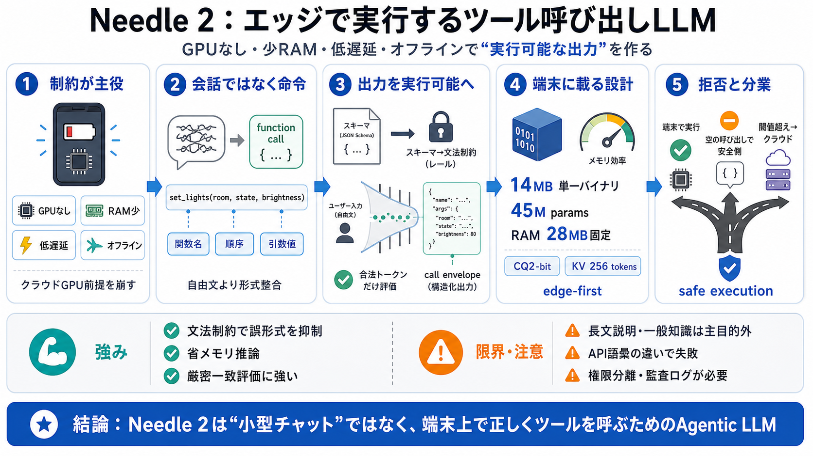

TurboQuant-H: Hadamard Rotation for 2-Bit Embedding Quantization - Cactus Docs
TurboQuant (Zandieh et al., ICLR 2026) introduced data-oblivious vector quantization with random rotation and QJL correc…

エッジで実行するAI
GPUなし・少RAM・低遅延・オフライン前提で、端末上のツール呼び出しと構造化抽出を狙うAgentic LLM（Needle 2）を整理します。
制約が主役
小型デバイスでは、クラウドGPU頼みのLLM運用が難しく、出力は「実行可能な形」である必要があります。
会話ではなく命令
ユーザーの雑な文章を「どの関数を、どんな引数で」実行するかに変換するのが中心課題です（自由文生成より形式が重要）。
モデルだけじゃない
Needle 2は「小さくする」だけでなく、スキーマ→出力制約、呼び出し包み（call envelope）、拒否と分業までを一体最適化します。
“そのまま載る”
Needle 2は、14MBの単一バイナリとしてWebAssemblyでも動き、ツール実行と構造化抽出を端末側で行う設計です。
出力を“実行可能”へ
通常はJSONっぽく見えても誤りが起きますが、Needle 2は文法制約で合法なトークン候補だけを評価し、実行可能性を高めます。
小型の“壊れ方”を避ける
後から強く量子化して精度が落ちる問題に対し、CQ2-bitを事後ではなく学習へ組み込むことで品質劣化を抑えると説明されています。
Bilingual: CQ2-bit（圧縮量子化）
RAMを固定する
KVキャッシュを256トークンのスライディングウィンドウで上限化し、RAMを28MBに固定する発想で、端末側の予算を守ります。
厳密一致が勝負
Mobile Actions、DroidCall、Seal-Tools、BFCL v4などで比較し、特に「関数名・呼び出し順・引数値の厳密一致」を重視しています。
エッジ×クラウド分業
基本は端末実行で、分からなければ空の呼び出し（拒否）にし、閾値を超えた場合だけ再問い合わせやクラウドへエスカレーションします。
強みと限界
Needle 2は「汎用チャットLLMの小型化」ではなく、「端末のツール実行最適化」に振ったモデルです。したがって、汎用知識推論の代替としては過信しないのが妥当です。
要点回収
Needle 2は、制約下の端末で「正しく実行できる出力」に寄せる設計（文法コンパイル・呼び出し包み・拒否・分業）と、CQ2-bit／KV上限／単一バイナリで運用の見積もりを立てやすくした取り組みです。
次に見るべきは、(1) 自社ツールスキーマへの適合（関数表現・語彙）と、(2) 権限分離・監査ログ・誤実行時のガバナンスです。
TurboQuant (Zandieh et al., ICLR 2026) introduced data-oblivious vector quantization with random rotation and QJL correc…
Last Updated: 2026-04-12 ( [...] ## Wagon Wheel The following chart shows the comparison of the models based on a …
3.1. Hadamard Transformation The Hadamard Transformation (HT) is the core build-ing block for mitigating quality loss d…
This repository was archived by the owner on Jul 24, 2026. It is now read-only. cactus-compute / functiongemma-hacka…
A right-hand-side Hadamard transformation, is the process of applying the linear transformation 𝐡(𝐀)=𝐀𝐇𝐝𝐡𝐀subscript𝐀𝐇𝐝\…